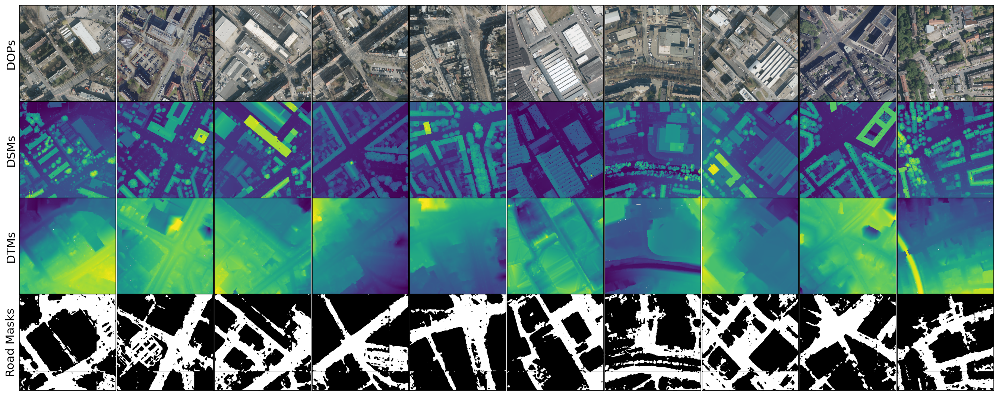
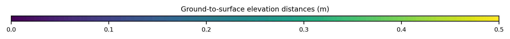
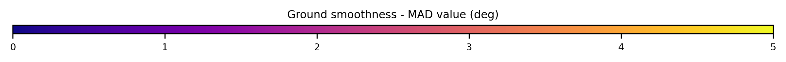

Road surface reconstruction from aerial images is fundamental for autonomous driving, urban planning, and virtual simulation, where smoothness, compactness, and accuracy are critical quality factors. Existing reconstruction methods often produce artifacts and inconsistencies that limit usability, while downstream tasks have a tendency to represent roads as planes for simplicity but at the cost of accuracy.
We introduce FlexRoad, the first framework to directly address road surface smoothing by fitting Non-Uniform Rational B-Splines (NURBS) surfaces to 3D road points obtained from photogrammetric reconstructions or geodata providers. Our method at its core utilizes the Elevation-Constrained Spatial Road Clustering (ECSRC) algorithm for robust anomaly correction, significantly reducing surface roughness and fitting errors. To facilitate quantitative comparison between road surface reconstruction methods, we present GeoRoad Dataset (GeRoD), a diverse collection of road surface and terrain profiles derived from openly accessible geodata. Experiments on GeRoD and the photogrammetry-based DeepScenario Open 3D Dataset (DSC3D) demonstrate that FlexRoad considerably surpasses commonly used road surface representations across various metrics while being insensitive to various input sources, terrains, and noise types. By performing ablation studies, we identify the key role of each component towards high-quality reconstruction performance, making FlexRoad a generic method for realistic road surface modeling.
GeRoD dataset comprises 14,482 million points from Airborne Laser Scaning from
Geobasis NRW (under Data License Germany -
Zero - Version 2.0),
including DSMs and DTMs with 1m precision and ±10cm error.
High-resolution DOPs cover 240 locations of 250m × 250m tiles across urban (168), sub-urban (23),
and rural (49) areas. The dataset features an average elevation difference of 54.7m with roads
covering 18% of the total area.
The error is computed as the distance between the fitted ground and the digital surface model
(DSM).
Use the slider to control the alpha (transparency) value of the fitting error heatmap.

The DSMs are obtained through airborne laser scanning (LiDAR) surveys conducted by the State Office for Geoinformation and
Land Development (LGL) in Baden-Württemberg.
The DSMs are obtained from the photogrammetric reconstruction of the scene.
The smoothness represented by the MAD value is the average angle between adjacent face normals,
constrained between 0 and 90 degrees.
Use the slider to control the alpha (transparency) value of the smoothness heatmap.

@inproceedings{dhaouadi2025flexroad,
title={Shape Your Ground: Refining Road Surfaces Beyond Planar Representations},
author={Dhaouadi, Oussema and Meier, Johannes and Kaiser, Jacques and Cremers, Daniel},
booktitle={2025 IEEE Intelligent Vehicles Symposium},
year={2025},
organization={IEEE}
}